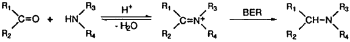

HTML by Rhodium
Borohydride Exchange Resin is a useful, convenient reducing agent for the reductive amination of aldehydes and ketones in alcoholic solvent.
Reductive amination of aldehydes and ketones is an important transformation which allows the direct conversion of carbonyl compounds into amines. For this purpose, cyanoborohydrides1-4 have been the most commonly utilized hydride reducing agent, however, borane-pyridine5 and sodium triacetoxyborohydride6,7 have also been introduced as less expensive, non-toxic alternatives. Sometime ago Borohydride Exchange Resin (BER) was introduced by Gibson and Daily8 and we reported BER is an interesting chemoselective reducing agent for carbonyl compounds in alcoholic solvents9,10 and several other significant applications were also presented11. Recently we noticed BER is much more stable than sodium borohydride in weakly acidic condition and we have found that BER could be utilized successfully for the reductive amination of aldehydes and ketones.
Table.
Reductive Amination of Aldehydes and Ketones with BER in Ethanol at Room Temperaturea

| Entry | Compound | Amine (eq.) | Time (h) | Yield (%) |
|
| GCe | Isolatedd | ||||
| 1 | hexanal | cyclohexylamine (1) | 1.0 | 98 | 89 |
| 2 | hexanal | aniline (6) | 1.0 | 53 | - |
| 3 | hexanal | diethylamine (3) | 1.0 | 92 | 86 |
| 4 | hexanal | piperidine (3) | 1.0 | 98 | 92 |
| 5 | hexanal | NH4OAcb (10) | 0.5 | (99)e | (90)e |
| 6 | cyclohexylcarboxaldehyde | cyclohexylamine (1) | 1.0 | 94 | 85 |
| 7 | cyclohexylcarboxaldehyde | piperidine (3) | 1.0 | 94 | 86 |
| 8 | cyclohexylcarboxaldehyde | NH4OAcb (10) | 0.5 | (92)e | (80)e |
| 9 | benzaldehyde | cyclohexylamine (1) | 1.0 | 98 | 94 |
| 10 | benzaldehyde | aniline (6) | 1.0 | 94 | 88 |
| 11 | benzaldehyde | diethylamine (6) | 1.0 | 65 | 58 |
| 12 | benzaldehyde | piperidine (6) | 1.0 | 95 | 90 |
| 13 | benzaldehyde | NH4OAcb (10) | 0.5 | (61)e | (53)e |
| 14 | cyclohexanone | benzylamine (3) | 1.0 | 99 | 92 |
| 15 | cyclohexanone | cyclohexylamine (3) | 1.0 | 89 | 80 |
| 16 | cyclohexanone | aniline (6) | 1.0 | 42 | - |
| 17 | cyclohexanone | pyrrolidine (6) | 1.0 | 96 | 89 |
| 18 | cyclohexanone | piperidine (6) | 1.0 | 49 | - |
| 19 | cyclohexanone | NH4OAcb (10) | 0.5 | 64(19)c | 59 |
| 20 | 2-heptanone | benzylamine (3) | 3.0 | 99 | 93 |
| 21 | 2-heptanone | cyclohexylamine (3) | 3.0 | 63 | 55 |
| 22 | 2-heptanone | pyrrolidine (6) | 1.0 | 96 | 89 |
| 23 | 2-heptanone | dimethylamine (6) | 3.0 | 78 | 68 |
| 24 | 2-heptanone | piperidine (6) | 6.0 | 38 | - |
| 25 | 2-heptanone | NH4OAcb (10) | 0.5 | 35(34)c | 25 |
| 26 | acetophenone | pyrrolidine (6) | 6.0 | 53 | - |
The preparation of N-hexylcyclohexylamine is representative.
1 mL of 2.5 M hexanal (0.25 g, 2.5 mmol) solution in ethanol, 1 mL of 2.5 M cyclohexylamine (0.248 g, 2.5 mmol) solution in ethanol, 10 mL of 0.5 M of Et3NHCl (5.0 mmol), and 0.76 g (2.5 mmol) of BER were placed in a 50 mL flask which is fitted with rubber-capped side arm, connected to a mercury bubbler. The reaction was started by stirring at room temperature. After 1 h, the acidic solution was neutralized with NaOH. After removing the resin by filtration, the solution was dried over anhydrous MgSO4. GC analysis indicated a 98% yield of N-hexylcyclohexylamine. In the preparative run, 10 mmol of cyclohexylamine was reacted as above. After 1 h,. the acidic solution was neutralized by the addition of 0.8 g (20 mmol) NaOH (solid). Resin was removed by filtration, and ethanol was removed by rotary evaporator. The residue was chromatographed on a silica gel column to provide 1.63g (89%) of pure N-hexylcyclohexylamine.
As shown in Table, aldehydes are reductively aminated rapidly with primary and secondary amines to give the corresponding secondary and tertiary amines almost quantitatively with only a few exceptions. The reaction of aldehydes with ammonium acetate gave secondary amines instead of the desired primary amines (entry 5, 8, 13). The other two lower yields (entry 2, 11) resulted, presumably due to electronic (aniline) and steric (diethylamine) reason. It is quite impressive that the corresponding secondary amines were obtained almost quantitatively from the reaction of aldehydes with only one equiv. of primary amines (entry 1, 6, 9), since it is the usual practice to add 6 equiv. of amines2-5 in order to minimize the formation of tertiary amines. On the other hand, in ketone series, aliphatic ketones (cyclohexanone and 2-heptanone) reacted readily with less hindered aliphatic amines such as benzylamine and pyrrolidine to give excellent yield of the corresponding amines (entry 14, 17, 20, 22) whereas somewhat lower yields with cyclohexylamine, piperidine and aniline (entry 15, 16, 18, 21, 24). These aliphatic ketones also gave fair yields of the corresponding primary amines with ammonium acetate, although accompanied by secondary amines (entry 19, 25). However acetophenone proceeded reductive amination sluggishly and gave a moderate yield only with pyrrolidine. In all these cases, where the yields were not quantitative, the remainings were the corresponding alcohols, produced by the competitive reduction of carbonyl compounds with BER.
Therefore BER seems to be a good alternative to cyanoborohydrides, BAP and NaBH(OAc)3 when imine or iminium ion formation is favored over the competitive reduction of carbonyl compound with BER. Since BER is also less expensive and non-toxic like BAP and NaBH(OAc)3, we believe it is an attractive reagent for reductive amination of aldehydes and aliphatic ketones with less hindered amines.